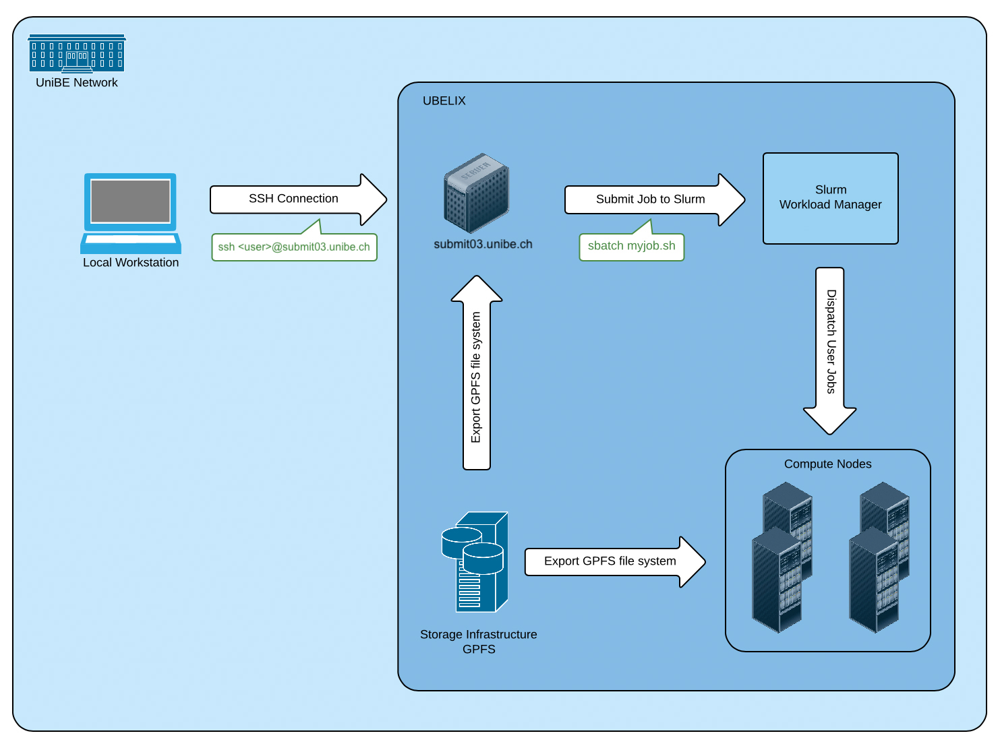

UBELIX - Overview
Description
This page provides a high-level system overview of an HPC cluster such as UBELIX. It describes the different hardware components that constitute the cluster and gives a quantitative list of the different generations of compute nodes in UBELIX.
UBELIX (University of Bern Linux Cluster) is an HPC cluster that currently consists of about 320 compute nodes featuring ~12k CPU cores and 160 GPUs and a software-defined storage infrastructure providing ~3.5 PB of disk storage net. UBELIX is a heterogeneous cluster, meaning UBELIX consists of different generations of compute nodes with different instruction sets. Compute nodes, front-end servers and the storage are interconnected through a high speed Infiniband network. The front-end servers also provide a link to the outside world. UBELIX is used by various institutes and research groups within chemistry, biology, physics, astronomy, computer science, geography, medical radiology and others for scientific research and by students working on their thesis.
High-level system overview
 The HPCs can only be reached within the UniBE network. User landing point are the login nodes, where jobs can be prepared and submitted. Computational tasks are scheduled and managed on the compute nodes using SLURM, the workload manager. All compute nodes as well as the login nodes have access to the parallel file system.
Login nodes aka. Submit nodes
A user connects to the cluster by logging into one of the submit hosts with his Campus Account’s username and password via SSH. You can use these hosts for medium-performance tasks, e.g. to edit files or to compile smaller programs. Resource-demanding/high-performance tasks must be submitted to the batch queuing system as jobs, and will finally run on one or multiple compute nodes. Also long running compile tasks should be submitted as a job on a compute node instead of running it on the submit hosts.
SLURM Batch-Queueing System
On UBELIX we use the open-source batch-queueing system Slurm, managing all jobs on the compute nodes. The job submission is described in detail in the Job handling section, starting with Submitting jobs.
The procedure look like:
- resource definition: resources required for your job need to be defined, including numbers of CPU cores, time limit, memory, partitions, QOS, etc.. These resources can be defined in the batch script or as command line arguments. Not explicitly specified parameters are chosen with default values.
- submitting: job can be submitted using
sbatch(using a batch script),srun(directly running the executable), orsalloc(interactive submission). The submission is checked from SLURM if it is within the specification and limits. - scheduling: Slurm is finding the optimal spots for the registered jobs on the resources and time. This also includes priority handling and optimizing for best coverage.
- launch: Slurm prepares the environment on the selected compute resources. This also includes setting up the MPI environment, if requested interactive sessions, etc., and launching your batch script.
- serial/parallel tasks: per default all the tasks defined in your batch script are run on the first core of your allocation. Compute tasks should be started with ‘srun’. Parallel task are launched on all (or as defined) job related resources.
- cancelling/completing: When tasks finished, wall time limit or memory limit is reached the job ant its environment gets removed from the resources. All output is written into file(s) (except of interactive sessions)
Cluster Partitions (Queues) and their Compute Nodes
UBELIX is a heterogeneous machine, consisting of different architectures. There are CPU compute nodes with:
- Intel Broadwell (20 cores per node; usage of full or multiple nodes)
- AMD Epyc2 (128 cores per node)
and GPU nodes with:
- Nvidia Geforce GTX 1080 Ti
- Nvidia Geforce RTX 2080 Ti
- Nvidia Geforce RTX 3090
- Nvidia Tesla P100
Without explicit changes, jobs are scheduled in the AMD Epyc2 partition, running up to 3 days.
Partitions group nodes into logical sets, which share the same limits. Furthermore, specific limits and privileges are managed using Quality Of Service (QOS), like high priorities or node limitations for long running jobs.
Different partitions and QOS are listed in the SLURM Partition/QOS article.
Storage Infrastructure
A modular, software-defined storage system (IBM Spectrum Scale) provides a shared, parallel file system that is mounted on all frontend servers and compute nodes. For more information see storage infrastructure and File System Quota.